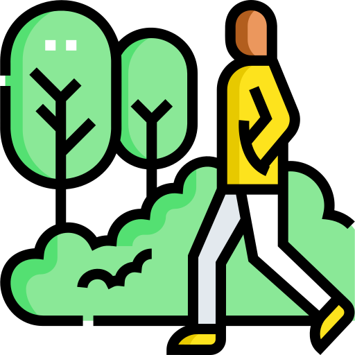
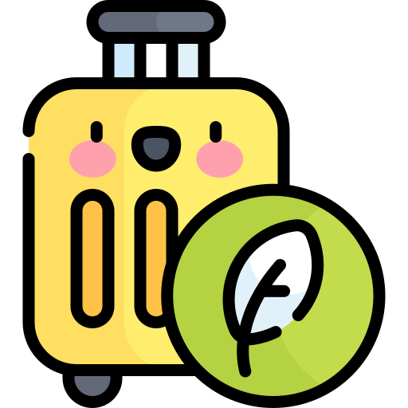

Explore Our Services
Discover eco-friendly commuting options tailored for convenience and sustainability.
Bike Rentals
One of the most effective and environmentally friendly methods to commute is by bicycle. We provide a range of rental alternatives that are suited to your needs in order to make biking accessible to everyone:
- Road Bikes: Perfect for long commutes and efficient travel.
- Mountain Bikes: Ideal for rugged terrain and outdoor adventures.
- Hybrid Bikes: A versatile option for urban and campus commuting.
Route Planning
Plan your journey with these tools:
- Safest routes for walking and cycling.
- Up-to-date public transport schedules.
- Combine bike rides with public transport.
Knowing that you're making the best decisions for the environment and your schedule, you can start your day with confidence.
Interactive Route Map
Visualise your journey with our state-of-the-art interactive route map. This tool is designed to help you explore:
- Bike-friendly paths and lanes in your area.
- Nearby amenities such as bike repair stations and rest stops.
- Public transport hubs and connections.
Whether you’re commuting to campus or exploring new routes, our map makes it easy to plan your eco-friendly journey.
Join Our Community Initiatives
Sustainable travel is a movement rather than only a decision. We invite you to take part in our neighbourhood-based programs, which are intended to motivate action and promote relationships:
- Step Challenges: Monitor your progress, engage in peer competition, and adopt an active commute.
- Cycle Challenges: Participate in campus-wide cycling events, log your rides, and set personal goals.
- Sustainable Commuting Workshops: Get advice on how to make eco-friendly travel a part of your everyday routine.
By working together, we can foster a sustainable culture and encourage people to choose more wisely when they travel.
Take Action
Join the movement towards sustainable travel today!
Contact Us to Get Started